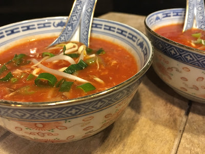

Chinese Tomatensoep
Deze chinese tomatensoep word meestal gebruikt als voorgerecht, maar kan ook gegeten worden als hoofdgerecht.
Ingrediënten
- 1 liter water
- 1 liter tomatensap
- 2 kipfilets
- 2 kippenbouillonblokjes
- 1 ui
- 2 tenen knoflook
- 1 blikje tomatenpuree
- 6 eetlepels suiker
- 4 eetlepels ketjap (manis)
- 2 eetlepels azijn
- 1 borrellepeltje sambal
- 1 borrellepeltje gemberpoeder
- 1 borrellepeltje citroengras
- 1 borrellepeltje maizena
- 1 handje vol mihoen
Bereidingswijze
- Snij de kipfilet in blokjes.
- Roerbak de uit to dat deze glazig is, voeg het vlees toe en bak dit even aan.
- Voeg de knoflook en de tomatenpuree toe.
- Blus af met een liter water. Voeg de kippenbouillonblokjes toe. Laat het een uurtje zachtjes pruttelen.
- Haal het vlees uit de bouillon.
- Voeg 1 liter tomatensap toe en breng het aan de kook.
- Zet het vlees gesneden in een apart schaaltje.
- Maak in een ander schaaltje een prutje van: suiker, ketjap, azijn, sambal, gemberpoeder en citroengras.
- Roer dit prutje en voeg dit aan de tomatenbouillon toe.
- Roer de maizena door een kopje koud water, roer dit tot een gladde massa en voeg dit aan de soep toe.
- Voeg de mihoen toe.
- Laat alles 20 minuten zachtjes doorkoken.
- Voeg het vlees toe.
- En eten maar.
Hier onder ziet u een foto van een van de soepen.
